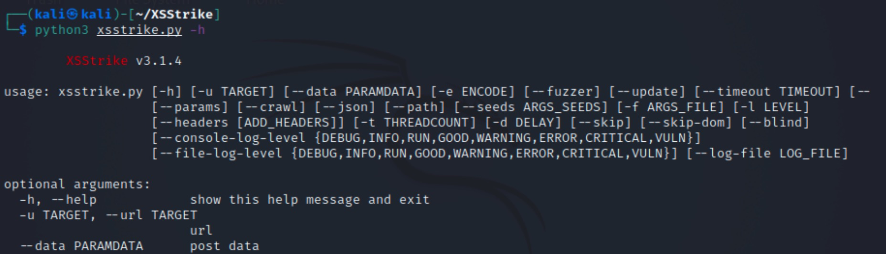
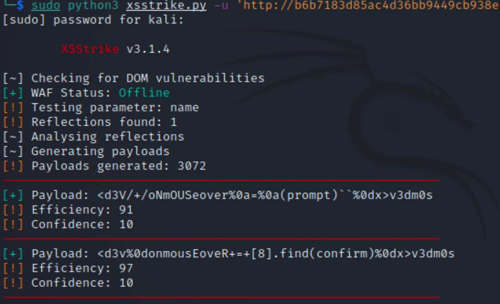

- 00 导读 解读OWASP Top10 2021.md.html
- 00 开篇词 从黑客的视角找漏洞，从安全的角度优雅coding.md.html
- 01 失效的访问控制：攻击者如何获取其他用户信息？.md.html
- 02 路径穿越：你的Web应用系统成了攻击者的资源管理器？.md.html
- 03 敏感数据泄露：攻击者如何获取用户账户？.md.html
- 04 权限不合理：攻击者进来就是root权限？.md.html
- 05 CSRF：为什么用户的操作他自己不承认？.md.html
- 06 加密失败：使用了加密算法也会被破解吗？.md.html
- 07 弱编码：程序之间的沟通语言安全吗？.md.html
- 08 数字证书：攻击者可以伪造证书吗？.md.html
- 09 密码算法问题：数学知识如何提高代码可靠性？.md.html
- 10 弱随机数生成器：攻击者如何预测随机数？.md.html
- 11 忘记加“盐”：加密结果强度不够吗？.md.html
- 12 注入（上）：SQL注入起手式.md.html
- 13 注入（下）：SQL注入技战法及相关安全实践.md.html
- 14 自动化注入神器（一）：sqlmap的设计思路解析.md.html
- 15 自动化注入神器（二）：sqlmap的设计架构解析.md.html
- 16 自动化注入神器（三）：sqlmap的核心实现拆解.md.html
- 17 自动化注入神器（四）：sqlmap的核心功能解析.md.html
- 19 失效的输入检测（上）：攻击者有哪些绕过方案？.md.html
- 20 失效的输入检测（下）：攻击者有哪些绕过方案？.md.html
- 21 XSS（上）：前端攻防的主战场.md.html
- 22 XSS（中）：跨站脚本攻击的危害性.md.html
- 23 XSS（下）：检测与防御方案解析.md.html
- 24 资源注入：攻击方式为什么会升级？.md.html
- 25 业务逻辑漏洞：好的开始是成功的一半.md.html
- 26 包含敏感信息的报错：将安全开发标准应用到项目中.md.html
- 27 用户账户安全：账户安全体系设计方案与实践.md.html
- 28 安全配置错误：安全问题不只是代码安全.md.html
- 29 Session与Cookie：账户体系的安全设计原理.md.html
- 30 HTTP Header安全标志：协议级别的安全支持.md.html
- 31 易受攻击和过时的组件：DevSecOps与依赖项安全检查.md.html
- 32 软件和数据完整性故障：SolarWinds事件的幕后⿊⼿.md.html
- 33 SSRF：穿越边界防护的利刃.md.html
- 34 Crawler VS Fuzzing：DAST与机器学习.md.html
- 35 自动化攻防：低代码驱动的渗透工具积累.md.html
- 36 智能攻防：构建个性化攻防平台.md.html
- 大咖助场 数字证书，困境与未来.md.html
- 春节策划（一） 视频课内容精选：Web渗透测试工具教学.md.html
- 春节策划（三） 一套测试题，看看对课程内容的掌握情况.md.html
- 春节策划（二） 给你推荐4本Web安全图书.md.html
- 结束语 无畏前行.md.html
- 捐赠
23 XSS（下）：检测与防御方案解析
你好，我是王昊天。
在上一节课程中，我们学习了XSS攻击的利用方式，从攻击者的角度来说这是非常友好的，因为我们可以用BeEF实现多种有趣的攻击行为，并且它的利用方式还非常简单。
但是另一方面，这对于Web应用开发者来说，却是非常害怕看到的，毕竟没有人想自己的Web应用受到别人的攻击。所以应用的安全维护人员会进行一些安全措施来抵御XSS攻击。
所以这节课，我们首先会学习XSS攻击的检测方法，了解如何判断一个页面是否存在XSS攻击。学习完XSS的检测方法后，我们会继续了解XSS的防御技术和缓解方法，看看Web应用是如何抵御这个简单却很有威力的攻击方式。最后，我会介绍JavaScript混淆技术，它可以将一个JavaScript字符转化为极其复杂的乱码，并且可以保留原代码的功能。
下面，就让我们进入到对XSS攻击的检测学习中。
XSS攻击的检测
在对XSS攻击的检测中，我们需要借助工具的帮忙。现在已经有了很多的XSS检测工具，这给我们带来了极大的便利，不再需要我们手动注入尝试了。
下面我会介绍一款好用的XSS检测工具——XSStrike，它的大多数payload都是由作者精心构造出的，具有极低的误报率。XSStrike会根据我们的输入，智能地生成合适的payload进行探测。这里，让我们一起看一个XSStrike的使用示例，来加深对它的理解。
首先，我们来看看它的用法。

其中比较重要的配置项，我将它们列举如下：
-h #提示信息
-u #目标地址
-data #通过post方式上传数据
--headers #配置请求头信息，包括cookie等
- h参数是用来输出提示信息的，当我们不知道要如何使用XSStrike时，就可以用这个参数来快速获取它的使用方式；
- u参数是用来设置被测试目标的链接，所以它是进行检测时必须的一个参数；
- 如果在测试中需要用POST方式上传一个参数，那么就需要用到data参数来进行上传；
- headers参数也是一个非常重要的参数，我们可以用它来配置请求头信息，其中包括了我们熟悉的cookie信息的配置。- 在了解完它的参数使用之后，我们选用谜团中的XSS跨站脚本攻击作为靶场进行测试。它是一个Python脚本，所以兼容性很好，我们使用XSStrike的代码为：
sudo python3 xsstrike.py -u 'http://b6b7183d85ac4d36bb9449cb938ef977.app.mituan.zone/level1.php?name=test'
这段代码就是用参数u配置了一个目标地址，其中在请求中通过get方式上传了参数name，这样XSStrike可以识别到这个通过get方式上传的参数，可以看到应用有如下输出：

从输出中，我们可以知道它会首先判断是否有WAF存在，然后对参数进行测试，获取到页面的响应，并据此生成payload。这和我们之前学习的sqlmap非常类似，因为它们本质上其实都是注入检测工具。
生成payload之后，XSStrike会将它们按照Confidence的值从大到小进行排序，之后按照顺序逐一对它们进行检测。这里你可能会好奇Confidence是什么，事实上，它代表的是XSStrike开发人员对于这个payload成功的信心，它的取值范围为0-10，值越高代表注入成功的可能性就越大。
之后XSStrike根据注入的payload以及它们响应的内容，会给这个payload生成一个评分即Efficiency，这个评分越高，代表这个payload实现XSS攻击的成功率越大。如果评分高于90，就会将这个payload标记为成功，并将它输出在命令行中，否则就会认为这个payload无效。
到这里，你已经学会了XSS攻击的检测方法，接下来让我们进入到XSS攻击防御方案的学习之中。
XSS防御方案
总体来说，对于XSS攻击的防御思路可以概括为一句话：对输入参数进行过滤拦截，对输出内容进行处理。下面，让我们先来学习对输入参数的过滤。
对输入参数的过滤
由于XSS攻击本质上就是JavaScript代码的注入，而注入问题的核心就是需要对用户的输入保持怀疑与警惕。针对用户的输入，有两种不同的解决方案，即黑名单过滤和白名单过滤机制。
黑名单过滤即判断输入的内容中，是否有黑名单中的内容，如果有就拒绝处理这个输入。对应到XSS攻击，我们需要将黑名单设为攻击需要用到的字符，例如<、>、script以及 \ 等。这样可以有效地拦截一些XSS注入负载。不过黑名单拦截有时候是不够全面的，我们很难将所有危险字符全部考虑到，并将它们禁用。
这时，我们就可以用白名单过滤机制，设定我们允许输入的字符，例如仅仅允许输入数字，那这样就可以百分百限制XSS注入的发生。可是出于实际情况考虑，严格的白名单过滤往往会让一些，带有危险字符的正常输入被拦截，所以这个方法也是存在局限性的。
接下来，让我们学习XSS攻击防御的另一种方案——对输出内容进行处理。
对输出内容编码
XSS攻击生效的原因除了输入外，还有Web应用将内容直接放到输出中，导致了JavaScript代码的生效。
针对这一点，我们可以将输出中的危险内容进行编码，例如将<编码为<，将>编码为>，这样就会使得